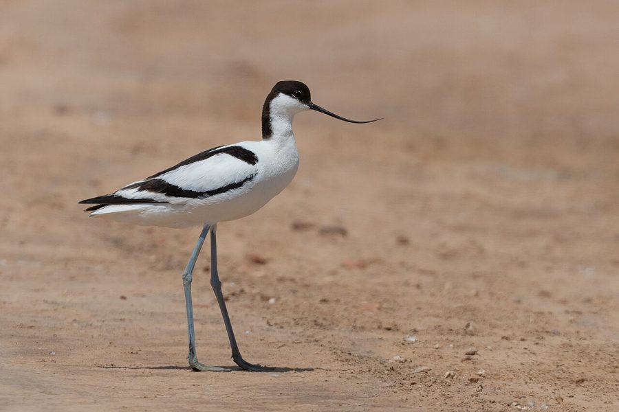

पाइड एवोसेटPied Avocet
Recurvirostra avosetta · Recurvirostridae · BRD-0234

- Scientific name वैज्ञानिक नाम
- Recurvirostra avosetta (Linnaeus, 1758)
- Family कुल
- Recurvirostridae
- Hindi हिंदी
- पाइड एवोसेट
- Local names स्थानीय नाम
- pied avocet, avocet
- Status here यहाँ की स्थिति
- native
- Movement आवागमन
- Winter visitor
- Known from कहाँ दर्ज
- Others have published records from the Basti–Ayodhya districts बस्ती–अयोध्या के ज़िलों से दूसरों के प्रकाशित अभिलेख
- IUCN IUCN
- LC
- Review समीक्षा
- audited and independently read
When to look कब देखें
Winter visitor शीतकालीन प्रवासी. Expected mainly in September, October, November, December, January, February, March, April. मुख्यतः सितंबर, अक्टूबर, नवंबर, दिसंबर, जनवरी, फ़रवरी, मार्च, अप्रैल में अपेक्षित।
Arrives in September–October from breeding grounds in Central Asia and southern Russia; departs by April. Expected on large wetlands and lakes. All migrants and visitors →
Tell it apart from इनसे अलग पहचानें
पाइड एवोसेट / Pied Avocet
Recurvirostra avosetta (Linnaeus, 1758) — Recurvirostridae
पाइड एवोसेट — यह बहुत सुंदर काली और सफेद चिड़िया उत्तरी एशिया से सर्दियों में भारत आती है। इसकी सबसे खास बात इसकी लंबी, ऊपर की ओर मुड़ी हुई चोंच है जिसे यह बड़े तालाबों के उथले पानी में घुमाकर छोटे जीव निकालता है। इसके लंबे पैर और काली-सफेद रंग इसे पहचानने में बहुत आसान बनाते हैं। ये पक्षी झुंड में रहते हैं और बहुत सतर्क होते हैं।
Quick Identification त्वरित पहचान
| Feature | Description |
|---|---|
| Size | Large wader; 43–47 cm long |
| Plumage | Striking black and white; white body, black cap and nape, black back |
| Bill | Very long, slender, distinctively upturned (recurved); black |
| Legs | Long, blue-grey to greyish-blue; suited for wading in deep water |
| Wings | Black flight feathers contrast sharply with white coverts |
| Tail | White; short |
| Behaviour | Walks slowly through shallow water, sweeping bill side to side; gregarious |
| Call | Loud, flute-like kleep or kuit-kuit |
Field tip: An elegant large wader with striking black and white plumage and a uniquely upturned bill. On large wetlands in eastern UP during winter, look for flocks of these birds wading in shallow water, moving their characteristic curved bills side to side through the water. The white body contrasting with black cap and back, combined with the upturned bill, is unmistakable.
हिंदी — कैसे पहचानें:
बहुत बड़ी वाडर, काली और सफेद।
ऊपर की ओर मुड़ी हुई लंबी चोंच।
नीली-भूरी लंबी टाँगें।
झुंड में पानी में चलते हुए।
जोर की आवाज़।
Morphology आकारिकी
Biometrics:
| Measurement | Range |
|---|---|
| Total length | 430–470 mm |
| Wing (flattened chord) | 230–260 mm |
| Tail | 60–80 mm |
| Bill | 70–90 mm |
| Tarsus | 60–75 mm |
| Weight | 260–410 g |
Size: 43–47 cm long; wingspan 72–85 cm. One of the larger waders.
Plumage: Striking bold pattern. Crown and nape black. Face and throat white. Back black, forming a band. Wings black above with white coverts. Underparts entirely white. Tail white. Lower back white.
Bill: The diagnostic feature — very long (7–9 cm), thin, and markedly upturned (recurved), black in colour. Used for sweeping through shallow water to capture prey.
Legs and feet: Long (6–7.5 cm), slender, grey-blue to blue-grey in colour. Adapted for wading in deep or shallow water.
Eyes: Dark; positioned for vision while wading.
Sexes: Similar; males may be slightly more richly marked.
Juveniles: Similar to adults but with duller plumage; upturned bill present but less pronounced initially.
Vocalisations
- Call: A loud, musical kleep or kuit-kuit, given in flight and when alarmed.
- Contact call: Soft whistles between flock members.
- Alarm: Harsh calls when disturbed.
हिंदी: तेज़ सीटी जैसी आवाज़। झुंड में बोली करते हैं।
Behaviour & Ecology व्यवहार और पारिस्थितिकी
Feeding technique: Specialist filter-feeder and dabbler in shallow water. Uses the distinctive upturned bill to sweep side to side through shallow water in a figure-eight motion, filtering small aquatic invertebrates and crustaceans. Feeds on:
- Small crustaceans (brine shrimp, water fleas)
- Aquatic insect larvae
- Small molluscs
- Plant matter
Wading behaviour: Walks slowly through shallow water (5–15 cm deep) in a deliberate manner, constantly sweeping the bill.
Social behaviour: Highly gregarious, especially in winter. Flocks of 20–100+ birds common on large wetlands. Often mixes with other wader species.
Roosting: Roosts on sandbars and shallow water margins; flocks roost together.
Habitat: Favours shallow, saline or brackish water bodies; also uses freshwater lakes and marshes.
हिंदी: बहुत सामाजिक चिड़िया। झुंड में शिकार करता है। चोंच घुमाकर पानी से छोटे जीव निकालता है।
Life Cycle / Phenology जीवन चक्र
Winter visitor: Absent during breeding season (April–August); returns to eastern UP from September–October and remains through March–April.
Arrival and departure: First birds arrive in September; peak numbers December–January; departure March–April.
Breeding range: Southern Russia, Kazakhstan, and Central Asia. Breeds April–July.
Courtship: Takes place on wintering grounds in late winter. Males display with synchronized walking and bill dipping.
Roosting: Communal roosts on shallow water and sandbars; flocks gather at dusk.
हिंदी: सितंबर में आता है, अप्रैल तक चला जाता है। सर्दी में झुंड बनाता है।
Host Plants or Prey आहार
| Food Type | Examples | Feeding Behaviour |
|---|---|---|
| Aquatic crustaceans | Brine shrimp, water fleas | Sweeping through shallow water |
| Insect larvae | Chironomids, mayflies | Filtering and picking |
| Small molluscs | Snails, clams | Extraction from mud |
| Plant matter | Algae, aquatic plants | Incidental |
हिंदी: छोटे जीव खाता है। पानी में चोंच घुमाकर निकालता है।
Predators / Natural Enemies शत्रु
- Avian predators: Peregrine Falcon, marsh harriers, large eagles
- Mammalian predators: Fox, jackal, feral cat
- At roost: Corvids, occasionally snakes
हिंदी: बड़ी चिड़ियों का शिकार होता है।
Agricultural / Human Relevance कृषि प्रासंगिकता
Protected status: All wild birds in India are protected under the Wildlife (Protection) Act 1972, Schedule IV. Hunting is illegal.
Wetland importance: Important indicator of wetland health. Presence indicates suitable shallow water habitats with invertebrate populations.
Cultural significance: Mentioned in classical texts and Mughal hunting records as a wetland species.
हिंदी: यह विधि अधिनियम 1972 के अंतर्गत संरक्षित है।
Expected Locally स्थानीय रूप से अपेक्षित
Not a field record. Written from published accounts for eastern Uttar Pradesh. No confirmed local sighting yet — if you have seen it, that is what the atlas needs.
अभी तक स्थानीय पुष्टि नहीं। यह विवरण प्रकाशित स्रोतों से है, किसी अवलोकन से नहीं।
The Pied Avocet is expected as a winter visitor to the larger wetlands of eastern Uttar Pradesh from September to April. Based on its range in northern India, the species should occur on large lakes and extensive marshes, particularly those with shallow water margins. It favours saline and brackish water bodies but will use freshwater wetlands. Peak occurrence should be December–February. A first record would require a clear photograph showing the black and white pattern, upturned bill, and grey-blue legs, with place and date, submitted through the About page.
Distribution वितरण
Global range: Europe, Asia, and North Africa. Breeds in southern Russia, Kazakhstan, and Central Asia; winters across Africa and southern Asia.
In India: Distributed across the Indian subcontinent as a winter visitor. Concentrated on large wetlands and saline lakes.
In Uttar Pradesh: Winter visitor to larger wetlands, particularly in northern and eastern districts.
In Basti district / eastern UP: Expected on large wetlands and lakes with shallow water from September to April. Winters in suitable habitat but specific local records require documentation.
Research Questions शोध प्रश्न
- What are the winter population counts and population trends of Pied Avocets in eastern UP wetlands?
- क्या पाइड एवोसेट बड़ी झीलों और खारे पानी के तालाबों को पसंद करते हैं, या मीठे पानी में भी आते हैं?
- How do Pied Avocets select foraging sites based on water depth, salinity, and invertebrate availability?
- What aquatic invertebrates comprise the bulk of their winter diet in eastern UP?
- क्या ये पक्षी हर साल एक ही जगह पर लौटते हैं, या अलग-अलग जगहों पर सर्दी बिताते हैं? (A child can photograph flocks and count individuals monthly.)
- How is the species affected by wetland degradation, pollution, and water management practices?
Similar Species मिलती-जुलती प्रजातियाँ
| Species | Key Difference | Hindi | Field Rule | |
|---|---|---|---|---|
| [[black_winged_stilt\ | Black-winged Stilt]] (Himantopus himantopus) | Longer, completely straight bill; red legs (not grey); all black back | काली पंखों वाली टांगी | Avocet has upturned bill and grey legs; Stilt has straight bill and red legs. |
| [[common_greenshank\ | Common Greenshank]] (Tringa nebularia) | Greenish legs; straight bill; smaller overall | ग्रीनशैंक | Avocet is much larger, whiter, with upturned bill and grey legs. |
Field rule: A large black-and-white wader with a distinctive upturned bill and grey-blue legs is a Pied Avocet. The upturned bill and white body with black cap and back pattern are unmistakable.
Taxonomy & Classification वर्गीकरण
Original description. Described by Carl Linnaeus in 1758 in Systema Naturae (10th edition), page 151, as Recurvirostra avosetta. Type locality: Europe.
Subspecies. Monotypic — no subspecies are currently recognised.
Family and order placement. Order Charadriiformes; family Recurvirostridae (avocets and stilts). The genus Recurvirostra contains four species of avocets, of which R. avosetta is the most widespread.
Phylogenetic notes. Avocets form a sister group to the stilts within Recurvirostridae. The upturned bill is a derived character shared only with a few other avocet species.
IUCN status rationale. Assessed as Least Concern (LC). Global population is large and stable. The species is adaptable to various wetland types and is not globally threatened. Some regional declines due to wetland loss.
हिंदी: यह चिड़िया दुनिया भर में पाई जाती है। भारत में सर्दियों में आती है।
Photo Gallery फोटो गैलरी
No photos yet — add field photos to media/species/pied_avocet/ and run node scripts/sync_photos.js.
Wanted photos:
- Flock in shallow water
- Upturned bill in profile (चोंच पार्श्व में)
- Adult showing black and white pattern
- Sweeping behaviour in water
- Close-up of head showing cap and nape
References संदर्भ
- Linnaeus, C. (1758). Systema Naturae per Regna Tria Naturae. 10th ed. Laurentii Salvii, Holmiae.
- Ali, S. & Ripley, S.D. (1987). Handbook of the Birds of India and Pakistan. Vol. 2. Oxford University Press, New Delhi. Pp. 271–273.
- Grimmett, R., Inskipp, C. & Inskipp, T. (2011). Birds of the Indian Subcontinent. 2nd ed. Christopher Helm, London. Pp. 133–135.
- Colomb, J.P. et al. (1977). Handbook of the Birds of Europe, the Middle East and North Africa: The Birds of the Western Palearctic. Vol. 1. Oxford University Press. Pp. 381–389.
- BirdLife International (2023). Recurvirostra avosetta. IUCN Red List of Threatened Species. IUCN, Cambridge.
- GBIF Occurrence Data — Recurvirostra avosetta, India.
Source file: species/fauna/birds/pied_avocet.md